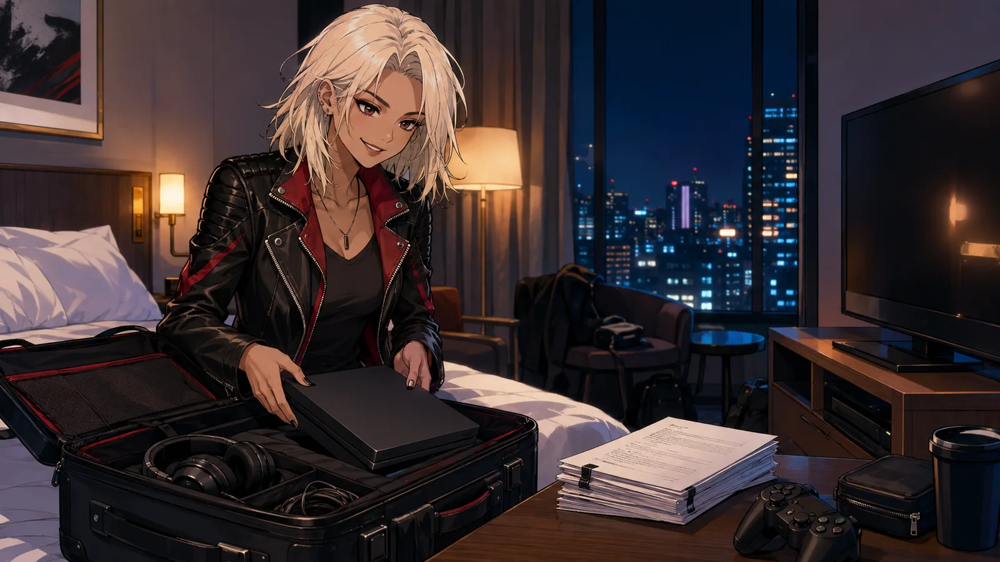
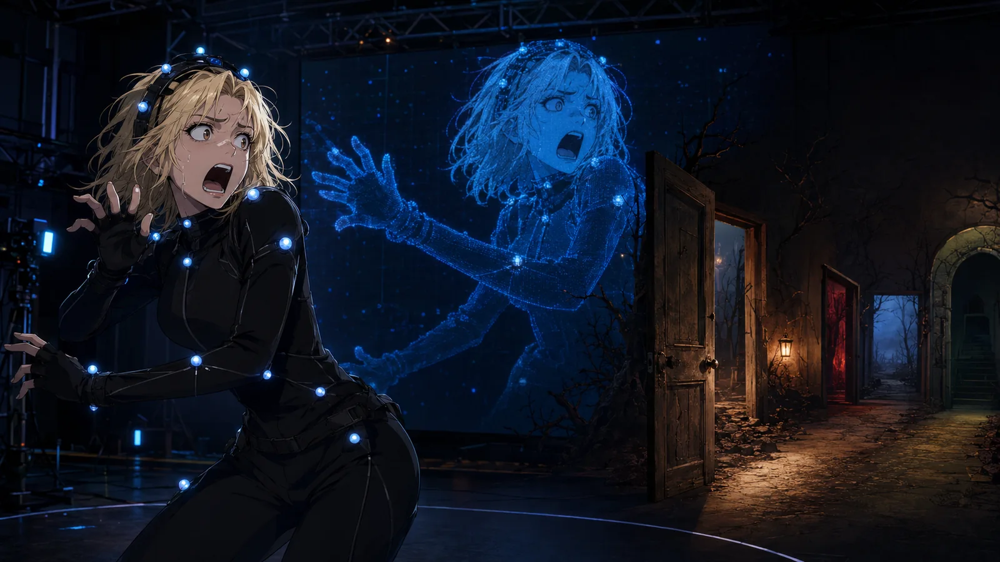

OUR CULTURE / GAMING • AUGUST 1, 2026
Samara Weaving Isn’t Just a Scream Queen—She’s an Open-World Agent of Chaos
Samara Weaving travels with her PS5, loves open-world adventures and would rather create trouble in Red Dead Redemption 2 than follow the objective marker.
Samara Weaving may be best known for surviving blood-soaked weddings, babysitting disasters and other cinematic nightmares, but apparently she spends her downtime creating a different kind of chaos.
The Ready or Not star is a legitimate console gamer—and not in the “I played Mario once during an interview” sense.
During a June 2026 appearance on Polygon’s Shelf Quest, Weaving discussed her gaming history, the kinds of games she enjoys and the extreme measure she takes to keep playing while working: she travels with her PlayStation 5.
Yes, the whole console.
While most travelers debate whether a handheld system is worth the luggage space, Weaving reportedly packs her PS5 and takes it to filming locations. That alone might qualify as the gamer equivalent of carrying identification.

From The Sims to open-world chaos
Weaving’s early gaming experiences included The Sims and Mario Kart. She did not grow up with a house full of consoles, but games remained part of her life and eventually developed into a serious interest in console gaming.
Her preferred genre is the open-world action game.
Weaving enjoys exploring large environments, completing side missions and discovering what happens when the player ignores the intended path. The games she has discussed include:
- Red Dead Redemption 2
- Assassin’s Creed
- God of War
- Hogwarts Legacy
- Mortal Kombat
- Gran Turismo
- The Sims
- Mario Kart
Red Dead Redemption 2 appears to be especially important. Weaving is a major fan, but she is not necessarily riding across the frontier to patiently absorb every chapter of Arthur Morgan’s emotional journey. Sometimes she would rather become what she calls a “naughty cowboy” and cause trouble.
It is a familiar gaming experience: start the evening planning to complete one important mission and somehow end it being chased across three counties because you accidentally punched the wrong person.
Exploration first, puzzles later
Weaving has also said complicated puzzles are not really her thing. She prefers games that allow her to move, explore and experiment without constantly stopping the adventure to solve an elaborate mechanical riddle.
That preference helps explain why open-world games work so well for her. They let players create personal stories between the scripted missions. One person follows the narrative exactly as intended. Another disappears into the wilderness for six hours and returns wearing a strange hat.
Weaving appears to belong proudly to the second group.
Her interest has crossed into her acting work as well. She has discussed playing Gran Turismo while preparing to portray getaway driver Edie in the action thriller Eenie Meanie, using racing games as another route into the role’s automotive world.
Could Samara Weaving enter a horror game?
There may already be a perfect bridge between Weaving’s two worlds.
Supermassive Games, the developer behind cinematic horror titles including Until Dawn, The Quarry and The Dark Pictures Anthology, previously identified Weaving as an actress the studio would be interested in working with.
Creative director Will Doyle named her while discussing modern scream queens who could fit into one of the studio’s horror projects. No Samara Weaving game has been announced, but the idea feels almost suspiciously obvious.

She has the horror experience, the expressive performance style and a genuine interest in gaming. Put her in a branching horror story, give players several terrible decisions and let the chaos begin.
Until then, somewhere between movie sets, Samara Weaving is probably unpacking a PS5, loading Red Dead Redemption 2 and completely ignoring the objective marker.
Some people play the hero.
Others become the local problem.